Tela 09 • antes e depois (Etapa 8 • Bloco 1)
Capturas em 1440 × 900, salvo indicação. Antes: cartões de ardósia, tubo azul, trem em arame e torre com anéis infinitos. Depois: linguagem editorial das telas 01–08, rota com exatamente cinco estações e cenário 3D por tempo, sem ciclos.
09.1 • Parceiro local e pilotos
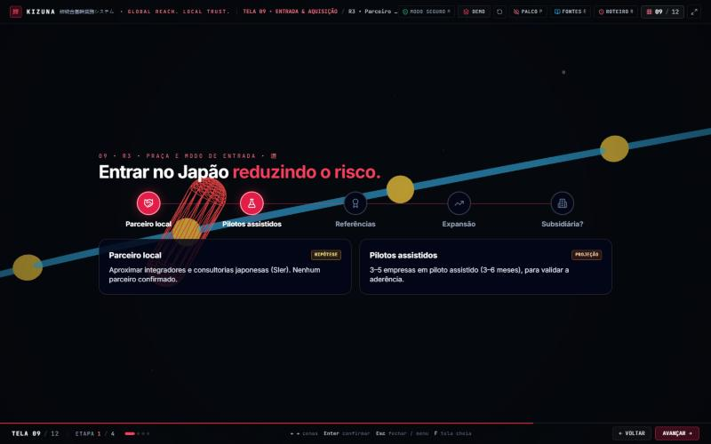
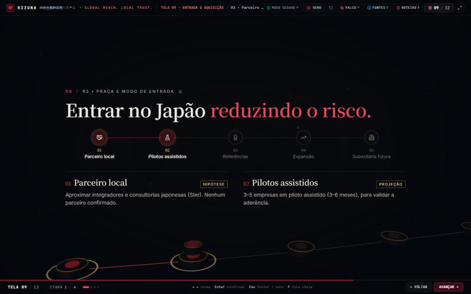
09.2 • Referências e expansão
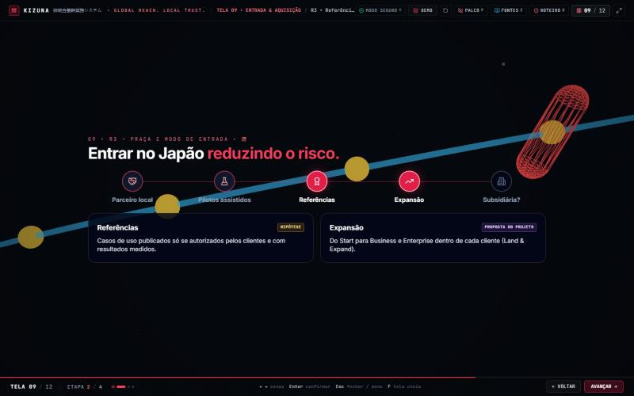
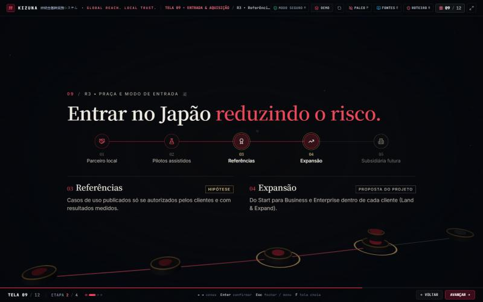
09.3 • Subsidiária futura
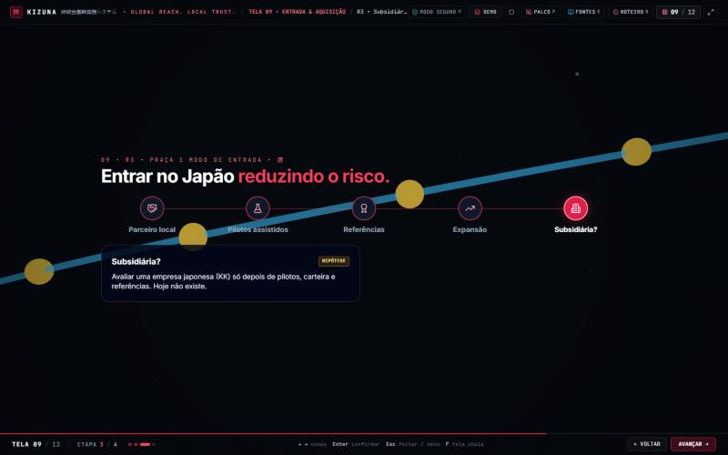
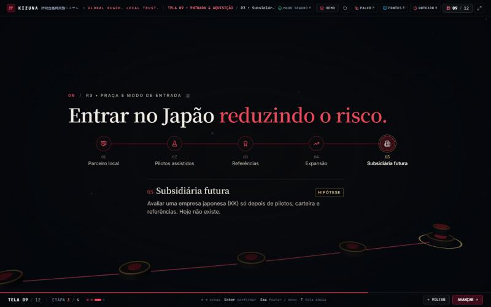
09.4 • Aquisição B2B
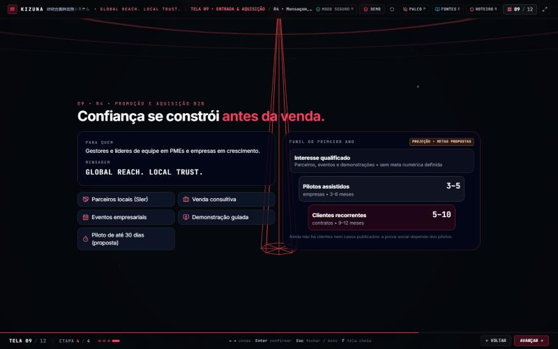
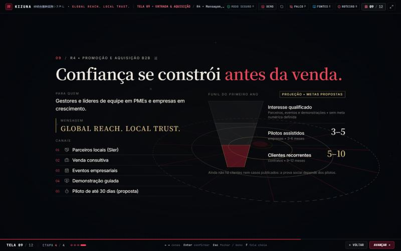
Transição e outras resoluções
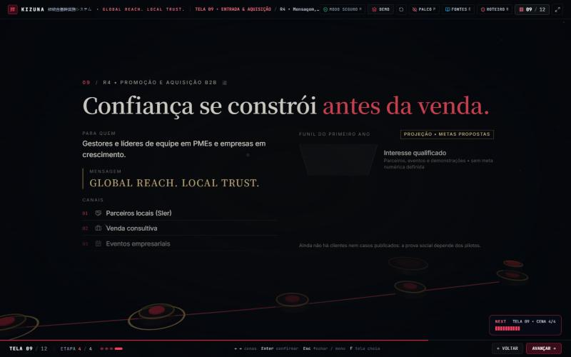
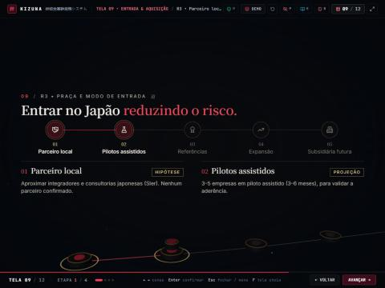
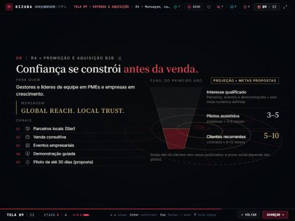
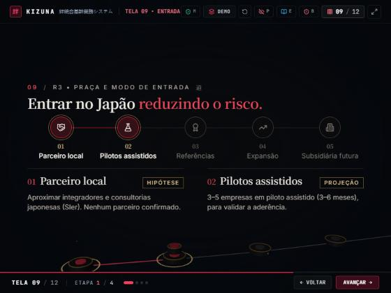
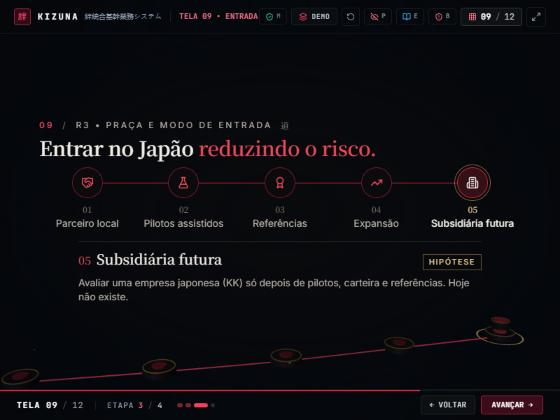
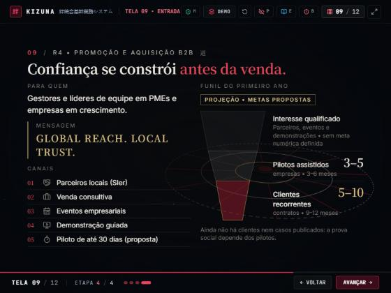